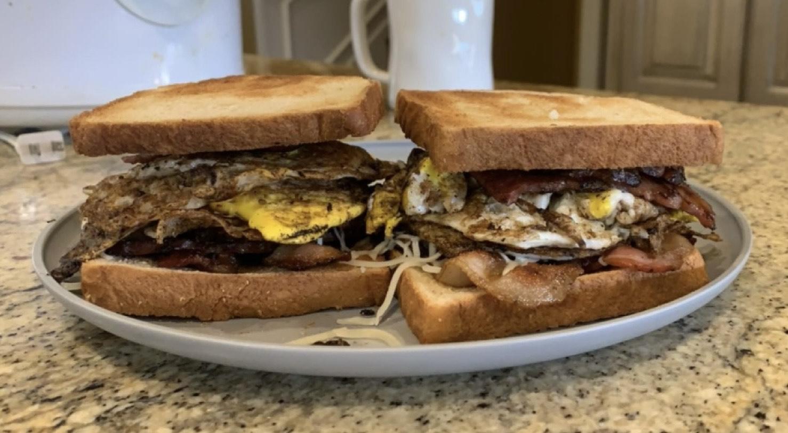

Breakfast Sandwich

Description
Above features a breakfast sandwich comprised of toast, eggs, ham, bacon and cheese. It will surely beat any breakfast sandwich you have had before.
Ingredients
- Sandwich bread
- Ham
- Bacon
- Eggs
- Shredded Mozzarella Cheese
Steps
- Grab however many eggs, bacon and ham you want to use
- Put your bread in the toaster but don't put it down yet
- Turn one side of the grill onto the high setting
- Lay your bacon and ham on the grill
- Every so often flip it back and forth until it is cooked to your liking
- Once done put the bacon and ham onto the other side of the grill and turn it onto the low setting
- Get your eggs and crack them onto the grill that the bacon and ham was previously on
- To time it correctly, once all of your eggs are cracked go pop the bread down in the toaster
- Every so often flip your eggs until they are cooked to your liking
- Go inside and grab your toast
- Start off by putting half the bacon and half the ham you made on the toast
- Then sprinkle the mozzarella cheese onto the ham
- Layer the eggs on top of the ham
- Put the other half of bacon and ham on top of the eggs
- Put the other piece of toast on top
- You now have an amazing breakfast sandwich enjoy!